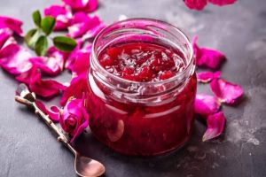

Rose jam

Description:
Incredibly fragrant, very beautiful and unusual in taste.
Ingridients:
- 60 g - tea rose petals
- 1.5 cups - water
- 2 cups - sugar
- a couple of drops - lemon juice
Cooking:
- Carefully separate the petals from the rose. Put them in a colander and rinse them under running water.
- Dip the petals in boiling water.
- Put the petals in a large bowl or basin. Add about 100 grams of sugar.
- Pour over lemon juice and leave for a day to extract the juice.
- The next day, mix the remaining sugar with water and make a syrup.
- Pour the infused petals into the syrup and boil for 5 minutes over low heat.
- Remove the pan from the heat and let the jam cool down. Repeat cooking and cooling again.
- Bring the cooled jam back to a boil, cook for 5 minutes and pour into jars.